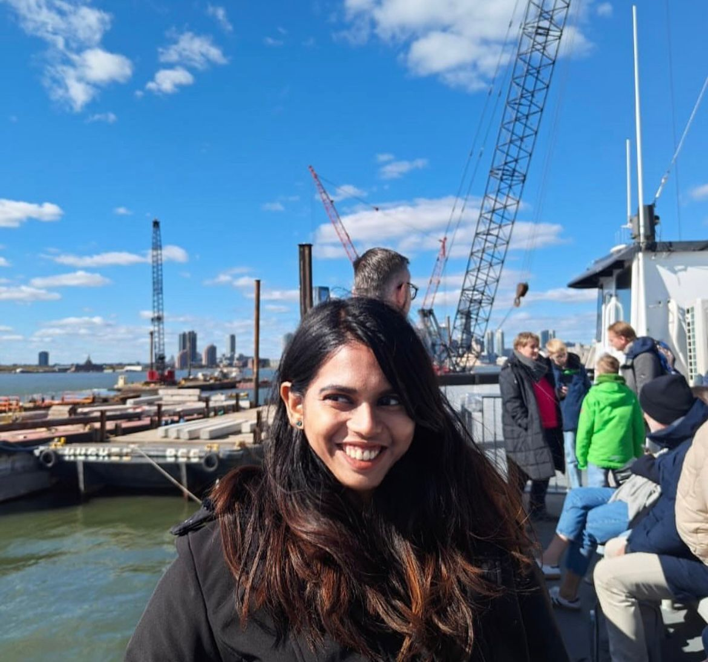
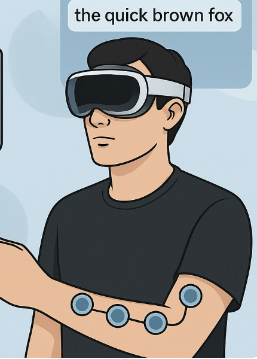

|
Dhivya Sreedhar
I'm a Master's student in Information Systems with a specialization in Machine Learning and NLP at Carnegie Mellon University's Language Technologies Institute. Previously, I earned my B.E. in Computer Science (with Honors) from Anna University in 2022. My interests span the intersection of LLMs, Multimodal ML, Agentic AI, and Responsible AI, with a strong passion for taking cutting-edge research to real-world production. At CMU, I’m collaborating on multimodal Chain-of-Thought (CoT) reasoning under Prof. Bhiksha Raj and interning at Reclamation Factory, where I’m building vision systems for plastic waste classification using NIR, XRF, and CNNs. I’m also an Applied AI Research Intern at Scale AI, evaluating LLM reasoning abilities (GPT-4, Claude, LLaMA) and fine-tuning models for QA, summarization, and code generation. Previously, I worked at BNY Mellon on RLHF-based conversational AI optimization and knowledge distillation frameworks, achieving $4.2M in cost savings. I also spent 2 years as a full-stack Software Engineer at Zoho, building real-time anomaly detection pipelines and distributed systems for cloud security. Outside of AI, I enjoy fostering animals, exploring nature, and lifting weights. I’m actively seeking Machine Learning and Applied Scientist roles starting January 2026 — let’s connect! |
 |
{kind=link}

CMU |

BNY |
Scale AI |
Anna University |
- [May 2025] Joined Scale AI as an Applied AI Intern, leading reasoning evaluations for frontier LLMs.
- [May 2025] Began internship at Reclamation Factory, building real-time plastic classification for robotics using multi-modal sensing and Vision Transformers.
- [Jan 2025] Started working with Prof. Bhiksha Raj at CMU's LTI on multimodal reasoning for ScienceQA.
- [Jan 2025] Built a human-in-the-loop LLM system for responsible deployment at BNY Mellon as an Applied Scientist Intern.
- [Aug 2024] Concluded 2 years at Zoho Corporation as a Machine Learning Scientist, building cloud-scale anomaly detection and ingestion tools.
- [Jun 2023] Published Typing Reinvented at NeurIPS: hands-free text input via EMG and Conformer-Transformer models. Explore.
- [Jun 2021] Completed a summer research internship at NIT Calicut under Dr. Prabu Mohandas, building a music instrument recognition system using CNNs and mel-spectrograms. Published in Springer – Advances in Speech and Music Technology.
- [May 2020] Started a research internship at IIITDM Kancheepuram under Dr. Sivaselvan B, working on face forgery detection with deep CNNs. Published in the Journal of Social Network Analysis and Mining.
- [May 2022] Completed B.E. in Computer Science from Anna University, graduating with distinction.
- [Jul 2019] Started undergraduate journey in Computer Science at Anna University.
Work & Internship Experience
|
Scale AI
Reclamation Factory (CMU Robotics Startup)
Bank of New York Mellon
Zoho Corporation – ManageEngine
IIITDM Kancheepuram
National Institute of Technology Calicut |
Highlighted Projects
|  |
Typing ReImagined: emg2qwerty Developed a real-time neuromusculoskeletal interface translating surface EMG signals into text for AR/VR platforms (Apple Vision Pro, Meta Quest). Achieved <5% CER and <30ms latency using a hybrid Conformer-Transformer with CTC loss. Integrated Flan-T5 and GPT-4 Turbo for autocorrection with SpecAugment and causal modeling for robust, low-latency inference. GitHub Final Report |
|
AI Interview Agent with LangChain + LLMs Built a generative agentic system simulating interviews using Llama 3, LangChain, and voice interaction. Vectorizes resumes, matches job descriptions, generates dynamic questions, and evaluates responses using an LLM-as-a-judge module with contextual reasoning and scoring. GitHub |
|
|
LLM-Powered Dataset Auditor Built a RAG-based label validation system for CV datasets. Used CLIP + FAISS to retrieve visual neighbors and GPT-4/Claude for contextual audit reasoning in LangGraph workflows. Logged corrections to structured formats for scalable validation pipelines. |
|
|
MyTorch: Custom Deep Learning Library Implemented PyTorch from scratch using Python and NumPy. Developed autograd engine, loss functions, optimizers, layers (Linear, Conv2D, LSTM, GRU, BatchNorm), and trained models like CNNs, RNNs, GNNs, and GANs using the library. Built for educational and experimental research use. GitHub |
|
Last updated July 2025. Thanks Jon Barron for the template! |